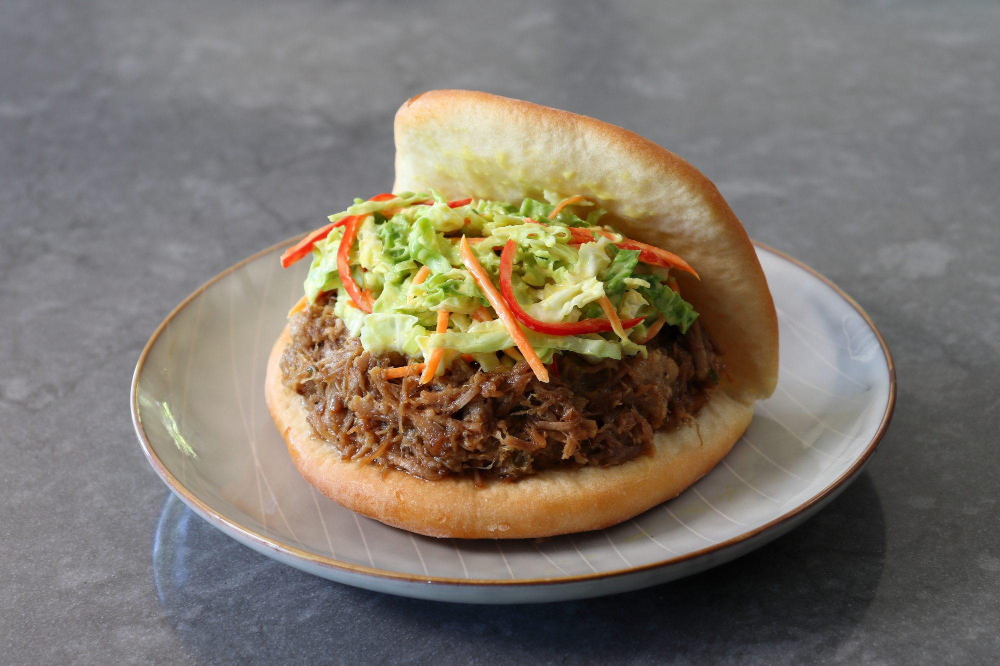

Apple Jack Pulled Pork Buns

Description
Everything about the name of this recipe is misleading. It sounds like the pork might be cooked with an apple brandy, but it's not. If it were, it would've been "Applejack" pulled pork, but the meat is actually stewed in apple juice and whiskey. That whiskey was originally Jack Daniel's®, but I used a local bourbon, so that part of the name is disingenuous as well. Hey, at least the pulled pork part is accurate. Just kidding. It's smashed, not pulled.
Recipe title-related artistic license aside, this is one of the most delicious "pulled" pork preparations I know, and one of the easiest methods ever. I love traditional pulled pork, where the whole shoulder is slowly smoked, and then pulled into succulent shreds, as long as it's done properly. That's a hit or miss proposition, as it's often dry and over-smoked. This method produces moist, flavorful pork every time, with much less effort and in significantly less time.
As I mentioned in the video, this particular recipe is on the sweet side, which I thinks works perfectly with the sharply-flavored slaw I topped it with, but if you want to dial that back, you can simply use less apple juice and replace it with water or broth. No matter how you adjust the ingredients to your taste, I do recommend you make it the day before. There is just something magical that happens to stewed meat, pulled or otherwise, when you reheat it, so if you have the time, that's definitely the way to go. Either way, I hope you give this a try soon.
Ingredients
- 2 and 1/2 pounds pork shoulder roast
- 1 red onion, diced
- 6 cloves garlic, minced
- 2 and 1/2 teaspoons kosher salt
- 1 teaspoon freshly ground black pepper
- 1 teaspoon smoked paprika
- 1 pinch cayenne pepper
- 1/3 cup bourbon whiskey
- 1/4 cup apple cid vinegar
- 3 cups apple juice
- 1 tablespoon chopped fresh chives, or to taste
- 8 sesame seed burger buns
Steps
- Cut pork shoulder into 2-inch chunks. Transfer to a stew pot. Add onion, garlic, kosher salt, pepper, smoked paprika, and cayenne. Pour in bourbon whiskey, apple cider vinegar, and apple juice. Stir to combine.
- Place over high heat and bring to a simmer; stir and reduce heat to low. Cover and let simmer until meat is fork-tender, about 2 hours.
- Use a spider strainer to transfer meat mixture to a bowl and set aside.
- Turn heat back to medium-high and reduce cooking liquid to about 75%, skimming the fat off of the top if desired.
- Reduce heat to low, stir in reserved pork, and use a potato masher to break pork into smaller pieces. Cook over low heat, stirring occasionally, to heat through and make sure pork absorbs sauce, 2 to 4 minutes. Taste and adjust seasoning if needed.
- For best results, refrigerate for 8 hours, or overnight.
- Meanwhile, combine cabbage, peppers, green onions, mustard, mayonnaise, vinegar, salt, black pepper, and cayenne for slaw in a large bowl. Mix very well. Refrigerate for at least 1 hour, or up to 12 hours.
- Reheat pork the next day over medium heat, stirring often. Stir in chopped chives.
- Mix mustard slaw well and drain off any excess moisture. Serve pork with mustard slaw on sesame seed buns.
Return to Main Page